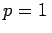

Inhalt Index DeskTop Bronstein

 Numerische Mathematik Integration gewöhnlicher Differentialgleichungen Anfangswertaufgaben Konvergenz, Konsistenz, Stabilität
Numerische Mathematik Integration gewöhnlicher Differentialgleichungen Anfangswertaufgaben Konvergenz, Konsistenz, Stabilität


Einschrittverfahren kann man allgemein in der folgenden Form darstellen:
Dabei wird F(x,y,h) Zuwachsfunktion oder Fortschreitrichtung des Einschrittverfahrens genannt. Die durch (19.110) gewonnene Näherungslösung hängt von der Schrittweite h ab und soll deshalb mit y(x,h) bezeichnet werden. Ihre Abweichung von der exakten Lösung y(x) der Anfangswertaufgabe (19.93) ergibt den globalen Diskretisierungsfehler (19.111), und man sagt: Das Einschrittverfahren (19.110) ist konvergent mit der Ordnung p (Konvergenzordnung), falls p die größte natürliche Zahl mit
 bestimmte Näherung y(x,h) für jede Verfeinerung der Einteilung mit
bestimmte Näherung y(x,h) für jede Verfeinerung der Einteilung mit | Beispiel |
|
Das EULERsche Polygonzugverfahren (19.97) hat die Konvergenzordnung . Für das RUNGE-KUTTA-Verfahren (19.99) gilt |